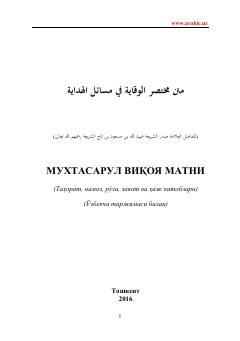

MVHanafiy fiqhining asosiy ibodat masalalarini qamrab olgan qisqacha qo'llanma.
Bu kitob hanafiy fiqhining mashhur asari 'Viqoyatur rivoya fil masailil Hidoya'ning qisqartmasi bo'lib, tahorat, namoz, ro'za, zakot va haj kitoblarini o'z ichiga oladi. Asar arabcha matn va o'zbekcha tarjima bilan birga 2016-yilda Toshkentda nashr etilgan. Muallif o'quvchilarga 'Hidoya' masalalarini oson o'rganish imkonini berish maqsadida bu muxtasarni tuzgan.